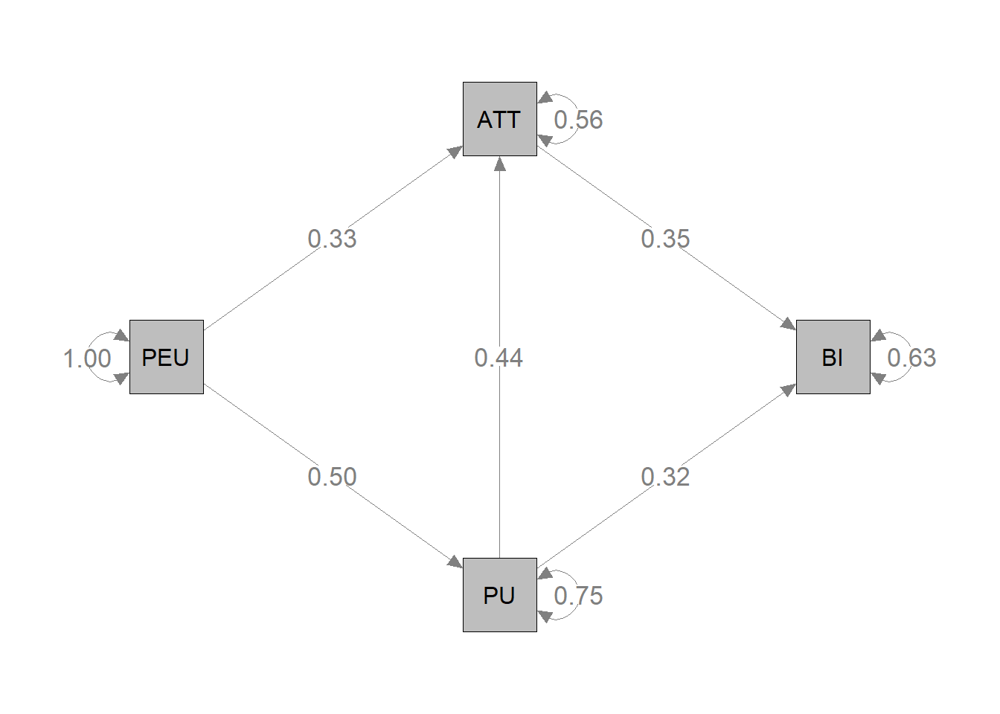
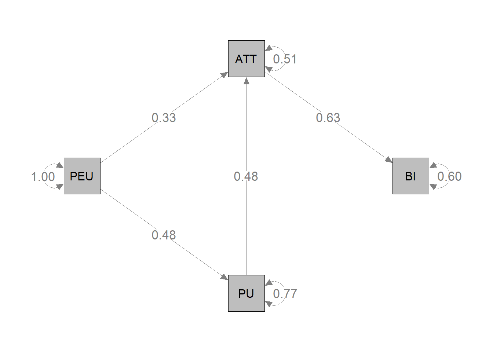

8 Correlation-Based MASEM
8.1 Check the correlation matrices for positive definiteness
# PD check
pd_check <- is.pd(TAMu$data)
sum(!is.na(pd_check))
#> [1] 50
pd_check
#> Okazaki & Renda dos Santos (2012) Parkman (2015)
#> TRUE TRUE
#> Wong (2015) Cote & Miliner (2015)
#> TRUE TRUE
#> Teo & Milutinovic (2015) Teo & Fan et al. (2015)-1
#> TRUE TRUE
#> Teo & Fan et al. (2015)-2 Koutromanos et al. (2015)-1
#> TRUE TRUE
#> Koutromanos et al. (2015)-2 Wu et al. (2015)
#> TRUE TRUE
#> Kabakci-Yurdakul et al. (2014) Kirmizi (2014)
#> TRUE TRUE
#> Mac Callum et al. (2014) Wong et al. (2013)
#> TRUE TRUE
#> Teo & Ursavas et al. (2011a) Teo & Luan et al. (2008)
#> TRUE TRUE
#> Sumak & Sorgo (2016)-1 Sumak & Sorgo (2016)-2
#> TRUE TRUE
#> Wu et al. (2016) Wong et al. (2016)
#> TRUE TRUE
#> Atif et al. (2015) Tokel & Isler (2015)
#> TRUE TRUE
#> Sadeghi et al. (2014) Pynoo et al. (2012)
#> TRUE TRUE
#> Aypay et al. (2012) Chen & Tseng (2012)
#> TRUE TRUE
#> Teo (2012a) Teo & van Schaik (2012)
#> TRUE TRUE
#> Teo & Noyes (2011) Teo & Lee et al. (2009a)-1
#> TRUE TRUE
#> Teo & Lee et al. (2009a)-2 Teo (2009a)
#> TRUE TRUE
#> Park et al. (2007) Cheung & Sachs (2006)
#> TRUE TRUE
#> Teo (2011) Shiue (2007)
#> TRUE TRUE
#> Chiu (2017) Lai et al. (2013)
#> TRUE TRUE
#> Teo & Zhou et al. (2016) Teo (2008)
#> TRUE TRUE
#> Wong & Teo et al. (2012) Luan & Teo (2009)
#> TRUE TRUE
#> Teo & Ursavas et al. (2012) Teo & Zhou (2014)
#> TRUE TRUE
#> Teo (2013) Teo & Milutinovic et al. (2016a)-1
#> TRUE TRUE
#> Teo & Milutinovic et al. (2016a)-2 Pittalis & Christou (2010)
#> TRUE TRUE
#> Fathema et al. (2015) Luan & Teo (2011)
#> TRUE TRUE
# if some Fail, need to exclude because its matrix is not positive definite
# Some description of the studies
# Available studies per correlation
pattern.na(TAMu$data, show.na=FALSE)
#> PU PEU ATT BI
#> PU 50 50 50 50
#> PEU 50 50 50 50
#> ATT 50 50 50 50
#> BI 50 50 50 50
# Available sample sizes per correlation
pattern.n(TAMu$data, TAMu$n)
#> PU PEU ATT BI
#> PU 14918 14918 14918 14918
#> PEU 14918 14918 14918 14918
#> ATT 14918 14918 14918 14918
#> BI 14918 14918 14918 14918All 50 correlation matrices are positive definite and can be submitted to stage 1 of the correlation-based MASEM approach (i.e., two-stage SEM). If some correlation matrices were not positive definite, we would either have to exclude them or find the nearest positive definite matrix (using the nearPD() function in the Matrix package).
Notice that none of the correlations were missing.
8.2 Stage 1: Pooling of correlation matrices
8.2.1 Pooling under a random-effects model
# Combine correlation matrices using a REM
#
rem <- tssem1(TAMu$data, TAMu$n,
method = "REM", # random effect model
RE.type = "Diag")
# Summarize the results
summary(rem)
#>
#> Call:
#> meta(y = ES, v = acovR, RE.constraints = Diag(paste0(RE.startvalues,
#> "*Tau2_", 1:no.es, "_", 1:no.es)), RE.lbound = RE.lbound,
#> I2 = I2, model.name = model.name, suppressWarnings = TRUE,
#> silent = silent, run = run)
#>
#> 95% confidence intervals: z statistic approximation (robust=FALSE)
#> Coefficients:
#> Estimate Std.Error lbound ubound z value Pr(>|z|)
#> Intercept1 0.4828802 0.0217706 0.4402105 0.5255499 22.1803 < 2.2e-16 ***
#> Intercept2 0.6068160 0.0174683 0.5725787 0.6410533 34.7381 < 2.2e-16 ***
#> Intercept3 0.5153033 0.0254332 0.4654551 0.5651514 20.2610 < 2.2e-16 ***
#> Intercept4 0.5276429 0.0209277 0.4866253 0.5686604 25.2127 < 2.2e-16 ***
#> Intercept5 0.4089908 0.0220210 0.3658303 0.4521513 18.5727 < 2.2e-16 ***
#> Intercept6 0.5187087 0.0259696 0.4678093 0.5696081 19.9737 < 2.2e-16 ***
#> Tau2_1_1 0.0210148 0.0047131 0.0117772 0.0302524 4.4588 8.243e-06 ***
#> Tau2_2_2 0.0134545 0.0030663 0.0074446 0.0194644 4.3878 1.145e-05 ***
#> Tau2_3_3 0.0298527 0.0064754 0.0171612 0.0425443 4.6102 4.023e-06 ***
#> Tau2_4_4 0.0195271 0.0044114 0.0108809 0.0281733 4.4265 9.578e-06 ***
#> Tau2_5_5 0.0210140 0.0048452 0.0115176 0.0305103 4.3371 1.444e-05 ***
#> Tau2_6_6 0.0312785 0.0066695 0.0182064 0.0443506 4.6898 2.735e-06 ***
#> ---
#> Signif. codes: 0 '***' 0.001 '**' 0.01 '*' 0.05 '.' 0.1 ' ' 1
#>
#> Q statistic on the homogeneity of effect sizes: 3622.956
#> Degrees of freedom of the Q statistic: 294
#> P value of the Q statistic: 0
#>
#> Heterogeneity indices (based on the estimated Tau2):
#> Estimate
#> Intercept1: I2 (Q statistic) 0.9178
#> Intercept2: I2 (Q statistic) 0.9146
#> Intercept3: I2 (Q statistic) 0.9460
#> Intercept4: I2 (Q statistic) 0.9217
#> Intercept5: I2 (Q statistic) 0.9015
#> Intercept6: I2 (Q statistic) 0.9493
#>
#> Number of studies (or clusters): 50
#> Number of observed statistics: 27
#> Number of estimated parameters: 12
#> Degrees of freedom: 15
#> -2 log likelihood: -241.0066
#> OpenMx status1: 0 ("0" or "1": The optimization is considered fine.
#> Other values may indicate problems.)
# Extract the pooled correlation matrix
corr.rem <- vec2symMat(coef(rem, select="fixed"), diag=FALSE)
colnames(corr.rem) <- c("PU", "PEU", "ATT", "BI")
rownames(corr.rem) <- c("PU", "PEU", "ATT", "BI")
corr.rem
#> PU PEU ATT BI
#> PU 1.0000000 0.4828802 0.6068160 0.5153033
#> PEU 0.4828802 1.0000000 0.5276429 0.4089908
#> ATT 0.6068160 0.5276429 1.0000000 0.5187087
#> BI 0.5153033 0.4089908 0.5187087 1.0000000Beacuse the Q statistic is different from 0. We can consider some moderation analysis
8.2.2 Pooling under a fixed-effects model
# Combine correlation matrices using a FEM
fem <- tssem1(TAMu$data, TAMu$n,
method = "FEM")
# Summarize the results
summary(fem)
#>
#> Call:
#> tssem1FEM(Cov = Cov, n = n, cor.analysis = cor.analysis, model.name = model.name,
#> cluster = cluster, suppressWarnings = suppressWarnings, silent = silent,
#> run = run)
#>
#> Coefficients:
#> Estimate Std.Error z value Pr(>|z|)
#> S[1,2] 0.5212537 0.0060659 85.932 < 2.2e-16 ***
#> S[1,3] 0.6402167 0.0049081 130.441 < 2.2e-16 ***
#> S[1,4] 0.5639943 0.0057290 98.445 < 2.2e-16 ***
#> S[2,3] 0.5652784 0.0056752 99.605 < 2.2e-16 ***
#> S[2,4] 0.4406021 0.0067117 65.647 < 2.2e-16 ***
#> S[3,4] 0.5744811 0.0056531 101.622 < 2.2e-16 ***
#> ---
#> Signif. codes: 0 '***' 0.001 '**' 0.01 '*' 0.05 '.' 0.1 ' ' 1
#>
#> Goodness-of-fit indices:
#> Value
#> Sample size 14918.0000
#> Chi-square of target model 3908.0585
#> DF of target model 294.0000
#> p value of target model 0.0000
#> Chi-square of independence model 25262.4835
#> DF of independence model 300.0000
#> RMSEA 0.2030
#> RMSEA lower 95% CI 0.1977
#> RMSEA upper 95% CI 0.2090
#> SRMR 0.1432
#> TLI 0.8523
#> CFI 0.8552
#> AIC 3320.0585
#> BIC 1082.6233
#> OpenMx status1: 0 ("0" or "1": The optimization is considered fine.
#> Other values may indicate problems.)
# Extract the pooled correlation matrix
coef(fem)
#> PU PEU ATT BI
#> PU 1.0000000 0.5212537 0.6402167 0.5639943
#> PEU 0.5212537 1.0000000 0.5652784 0.4406021
#> ATT 0.6402167 0.5652784 1.0000000 0.5744811
#> BI 0.5639943 0.4406021 0.5744811 1.0000000The fit of the fixed-effects model is marginal and suggests that the data are not represented well. Moreover, the REM indicates some significant heterogeneity of the correlations across studies. This gives reason to prefer the REM over the FEM.
8.3 Stage 2: Structural equation modeling
The pooled correlation matrix is now submitted to SEM.
8.3.1 Model 1: Path model with the direct effect
In the first step, we specify the model using the lavaan language.
# Model specification
Model1 <- " # Structural parameters
BI ~ ATT + PU
ATT ~ PEU + PU
PU ~ PEU
# Variance of independent variables
PEU ~~ 1*PEU
"
# Convert the model into the RAM language
RAM <- lavaan2RAM(Model1,
obs.variables = c("PU", "PEU", "ATT", "BI"))This model is now estimated using the pooled correlation matrix obtained from the stage-1 REM.
# Model estimation
# Confidence intervals are likelihood-ratio based (LBCIs)
TS.Model1 <- tssem2(rem, RAM = RAM,
intervals.type="LB",
diag.constraints = TRUE,
model.name = "Model 1 with the direct effect")
# Summarize the model parameters
summary(TS.Model1)
#>
#> Call:
#> wls(Cov = pooledS, aCov = aCov, n = tssem1.obj$total.n, RAM = RAM,
#> Amatrix = Amatrix, Smatrix = Smatrix, Fmatrix = Fmatrix,
#> diag.constraints = diag.constraints, cor.analysis = cor.analysis,
#> intervals.type = intervals.type, mx.algebras = mx.algebras,
#> model.name = model.name, suppressWarnings = suppressWarnings,
#> silent = silent, run = run)
#>
#> 95% confidence intervals: Likelihood-based statistic
#> Coefficients:
#> Estimate Std.Error lbound ubound z value Pr(>|z|)
#> ATTONPEU 0.31363 NA NA NA NA NA
#> ATTONPU 0.15952 NA NA NA NA NA
#> BIONATT 0.13118 NA NA NA NA NA
#> BIONPU 0.12996 NA NA NA NA NA
#> PUONPEU 0.30617 NA NA 1.34144 NA NA
#> ATTWITHATT 0.10009 NA NA NA NA NA
#> BIWITHBI 0.10009 NA NA NA NA NA
#> PUWITHPU 0.10009 NA NA NA NA NA
#>
#> Goodness-of-fit indices:
#> Value
#> Sample size 14918.0000
#> Chi-square of target model 1564.2532
#> DF of target model 1.0000
#> p value of target model 0.0000
#> Number of constraints imposed on "Smatrix" 3.0000
#> DF manually adjusted 0.0000
#> Chi-square of independence model 3002.8434
#> DF of independence model 6.0000
#> RMSEA 0.3237
#> RMSEA lower 95% CI 0.3104
#> RMSEA upper 95% CI 0.3373
#> SRMR 0.3739
#> TLI -2.1298
#> CFI 0.4784
#> AIC 1562.2532
#> BIC 1554.6428
#> OpenMx status1: 3 ("0" or "1": The optimization is considered fine.
#> Other values indicate problems.)
# Rerun the model to circumvent convergence issues and get all parameters
TS.Model1 <- rerun(TS.Model1)
# Summarize the model parameters
summary(TS.Model1)
#>
#> Call:
#> wls(Cov = pooledS, aCov = aCov, n = tssem1.obj$total.n, RAM = RAM,
#> Amatrix = Amatrix, Smatrix = Smatrix, Fmatrix = Fmatrix,
#> diag.constraints = diag.constraints, cor.analysis = cor.analysis,
#> intervals.type = intervals.type, mx.algebras = mx.algebras,
#> model.name = model.name, suppressWarnings = suppressWarnings,
#> silent = silent, run = run)
#>
#> 95% confidence intervals: Likelihood-based statistic
#> Coefficients:
#> Estimate Std.Error lbound ubound z value Pr(>|z|)
#> ATTONPEU 0.32668 NA 0.26622 0.38448 NA NA
#> ATTONPU 0.43668 NA 0.38553 0.48763 NA NA
#> BIONATT 0.35455 NA 0.26337 0.44480 NA NA
#> BIONPU 0.32253 NA 0.23007 0.41357 NA NA
#> PUONPEU 0.49973 NA 0.45790 0.54145 NA NA
#> ATTWITHATT 0.56001 NA 0.51641 0.60109 NA NA
#> BIWITHBI 0.63306 NA 0.58725 0.67591 NA NA
#> PUWITHPU 0.75027 NA 0.70688 0.79028 NA NA
#>
#> Goodness-of-fit indices:
#> Value
#> Sample size 14918.0000
#> Chi-square of target model 10.0900
#> DF of target model 1.0000
#> p value of target model 0.0015
#> Number of constraints imposed on "Smatrix" 3.0000
#> DF manually adjusted 0.0000
#> Chi-square of independence model 3002.8434
#> DF of independence model 6.0000
#> RMSEA 0.0247
#> RMSEA lower 95% CI 0.0125
#> RMSEA upper 95% CI 0.0395
#> SRMR 0.0285
#> TLI 0.9818
#> CFI 0.9970
#> AIC 8.0900
#> BIC 0.4797
#> OpenMx status1: 0 ("0" or "1": The optimization is considered fine.
#> Other values indicate problems.)
# Plot results
plot(TS.Model1)
# Visualize the model and add its parameters
TS.Model1.plot <- meta2semPlot(TS.Model1)
semPaths(TS.Model1.plot, whatLabels="est",
rotation=2,
edge.label.cex = 1.25,
sizeMan = 8,
color = "grey",
layout = "tree2")
8.3.2 Model 2: Path model without the direct effect
In the first step, we specify the model using the lavaan language.
# Model specification
Model2 <- " # Structural parameters
BI ~ ATT
ATT ~ PEU + PU
PU ~ PEU
# Variance of independent variables
PEU ~~ 1*PEU
"
# Convert the model into the RAM language
RAM2 <- lavaan2RAM(Model2,
obs.variables = c("PU", "PEU", "ATT", "BI"))This model is now estimated using the pooled correlation matrix obtained from the stage-1 REM.
# Model estimation
# Confidence intervals are likelihood-ratio based (LBCIs)
TS.Model2 <- tssem2(rem, RAM = RAM2,
intervals.type="LB",
diag.constraints = TRUE,
model.name = "Model 2 without the direct effect")
# Rerun the model to circumvent convergence issues and get all parameters
TS.Model2 <- rerun(TS.Model2)
# Summarize the model parameters
summary(TS.Model2)
#>
#> Call:
#> wls(Cov = pooledS, aCov = aCov, n = tssem1.obj$total.n, RAM = RAM,
#> Amatrix = Amatrix, Smatrix = Smatrix, Fmatrix = Fmatrix,
#> diag.constraints = diag.constraints, cor.analysis = cor.analysis,
#> intervals.type = intervals.type, mx.algebras = mx.algebras,
#> model.name = model.name, suppressWarnings = suppressWarnings,
#> silent = silent, run = run)
#>
#> 95% confidence intervals: Likelihood-based statistic
#> Coefficients:
#> Estimate Std.Error lbound ubound z value Pr(>|z|)
#> ATTONPEU 0.32656 NA 0.27283 0.37870 NA NA
#> ATTONPU 0.48260 NA 0.43557 0.52893 NA NA
#> BIONATT 0.63443 NA 0.59523 0.67385 NA NA
#> PUONPEU 0.48312 NA 0.44040 0.52585 NA NA
#> ATTWITHATT 0.50818 NA 0.46574 0.54856 NA NA
#> BIWITHBI 0.59750 NA 0.54592 0.64562 NA NA
#> PUWITHPU 0.76660 NA 0.72328 0.80609 NA NA
#>
#> Goodness-of-fit indices:
#> Value
#> Sample size 14918.0000
#> Chi-square of target model 52.1716
#> DF of target model 2.0000
#> p value of target model 0.0000
#> Number of constraints imposed on "Smatrix" 3.0000
#> DF manually adjusted 0.0000
#> Chi-square of independence model 3002.8434
#> DF of independence model 6.0000
#> RMSEA 0.0410
#> RMSEA lower 95% CI 0.0318
#> RMSEA upper 95% CI 0.0510
#> SRMR 0.0711
#> TLI 0.9498
#> CFI 0.9833
#> AIC 48.1716
#> BIC 32.9510
#> OpenMx status1: 0 ("0" or "1": The optimization is considered fine.
#> Other values indicate problems.)
# Visualize the model and add its parameters
TS.Model2.plot <- meta2semPlot(TS.Model2)
semPaths(TS.Model2.plot, whatLabels="est",
rotation=2,
edge.label.cex = 1.25,
sizeMan = 8,
color = "grey",
layout = "tree2")
8.3.3 Model comparison: Model 1 vs. Model 2
# Model comparison
anova(TS.Model1, TS.Model2)
#> base comparison ep minus2LL
#> 1 Model 1 with the direct effect <NA> 8 10.09000
#> 2 Model 1 with the direct effect Model 2 without the direct effect 7 52.17163
#> df AIC diffLL diffdf p
#> 1 -5 26.09000 NA NA NA
#> 2 -4 66.17163 42.08163 1 8.754174e-11The chi-square different test suggest the preference of the model with the direct effect (Model 1) over the model without this effect (Model 2).